Retour
Page précédente
Page suivante
QCM : Les sols - Auto-évaluation
À l'interface entre lithosphère, atmosphère, hydrosphère et biosphère ?
1. La civilisation Maya, une des plus importantes civilisations précolombiennes, connaît de forts bouleversements sur la période 750-1050 ap. JC (abandon des cités, dépeuplement, effondrement de la royauté sacrée, arrêt des constructions monumentales). Parmi les causes avancées ci-dessous, laquelle, entre autres, est retenue par les spécialistes ?
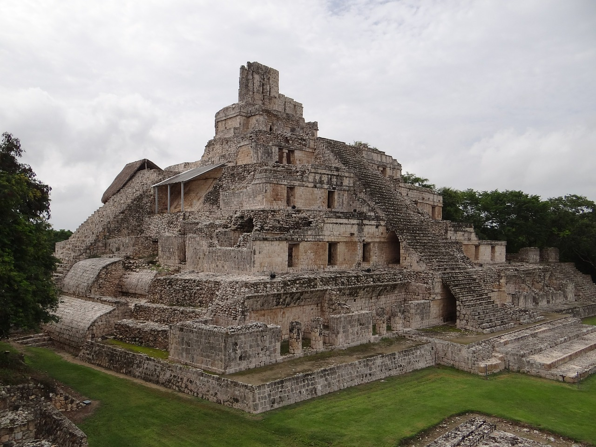
×
A) Introduction de mauvaises techniques culturales des sols aux indigènes par les Espagnols, causant un appauvrissement des sols.
B) Asphyxie des sols recouverts par d'épaisses couches de cendres volcaniques relâchées par les éruptions successives du strato-volcan du Pacaya au Guatemala.
C) Surexploitation et déforestation massive par les Mayas eux-mêmes, provoquant un appauvrissement et une érosion accélérée des sols.
D) Appauvrissement des sols par les retombées de cendres suite à l'impact d'une grosse météorite à Chicxulub dans la péninsule du Yucatan.
Commentaire:
Les spécialistes attribuent cet effondrement à un ensemble de facteurs complexes, dont des sécheresses prolongées aggravées par une déforestation massive et une agriculture intensive, qui ont conduit à des crises sociales et politiques (https://journals.openedition.org//com/5626). Les Mayas ont dû faire face à des contraintes environnementales majeures liées à la qualité de leurs sols. Leurs terres, souvent pauvres en nutriments, étaient soit des calcaires arides, soit des argiles rouges peu profondes. Les forêts, tropicales ou sèches, étaient adaptées à ces sols mais fragiles. Les inondations saisonnières et le mauvais drainage compliquaient l'agriculture. Malgré ces défis, les Mayas ont développé des techniques agricoles pour cultiver, principalement le maïs, dans ces environnements difficiles. Cependant, la déforestation et l'agriculture intensive ont rapidement épuisé les sols, contribuant à la fragilité de leur civilisation.
2. Comment appelle-t-on les spécialistes scientifiques qui cherchent à mettre au point des techniques pour améliorer la qualité des sols à des fins agricoles ?
A) Des édaphologues.
B) Des éthologues.
C) Des pédologues.
D) Des agronomes.
Commentaire:
Les agronomes sont des experts en sciences agricoles, et leur travail inclut l'amélioration de la qualité des sols pour optimiser la production agricole. Les pédologues sont des experts en sciences du sol. Un édaphologue est un spécialiste des sols, plus précisément de leur interaction avec les plantes et leur environnement. Un éthologue est un scientifique spécialisé dans l'étude du comportement des animaux.
3. Un hectare de sols équivaut à une surface de ...
×
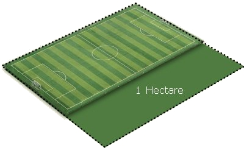
×
A) 1 km
2
.
B) 10 000 m
2
.
C) 1 000 m
2
.
D) 100 000 m
2
.
Commentaire:
Un hectare est une unité de mesure de surface équivalente à 10 000 mètres carrés.
4. L'extension urbaine et le développement routier est à l'origine d'une imperméabilisation accrue des sols. Au rythme actuel, quelle est la surface approximative de terres agricoles et naturelles qui se perd en France toutes les décennies ?
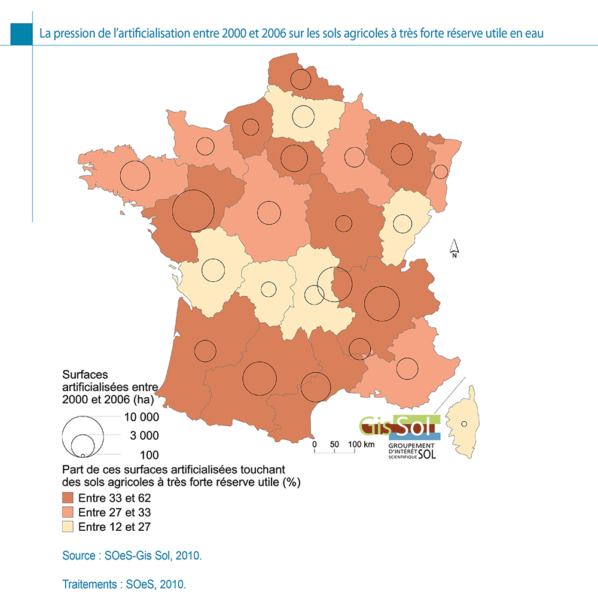
×
A) Une surface équivalente à la ville de Vichy (~ 6 km
2
).
B) Une surface équivalente à un cinquième de département (~ 1 000 km
2
).
C) Une surface équivalente à la région Auvergne (~ 26 000 km
2
).
D) Une surface équivalente à l'agglomération clermontoise (~ 300 km
2
).
Commentaire:
Les surfaces artificialisées sont données par les cercles. On compte 22 cercles. 5 d'entre eux reprèsentent 10 000 ha, les autres environ 3 000 ha. Un calcul approximatif donne 5*1e4 + 17*1e3 = 67 000 ha, et cela sur une période de 6 ans. Par an, cela représente une surface de 10 000 ha, soit 100 km
2
. En 10 ans, la perte de terres agricoles est donc de 1000 km
2
, soit 100 000 ha.
5. Voici une carte de la CEC des sols d'Europe. En rose, les sols à CEC faible (< 15 cmol/kg). En jaune, les sols à CEC modérée (entre 15 et 40 cmol/kg). (Source:
http://eduterre.ens-lyon.fr/thematiques/sol/sols-deurope/les-sols-deurope
).
Parmi ces affirmations, lesquelles sont vraies ?
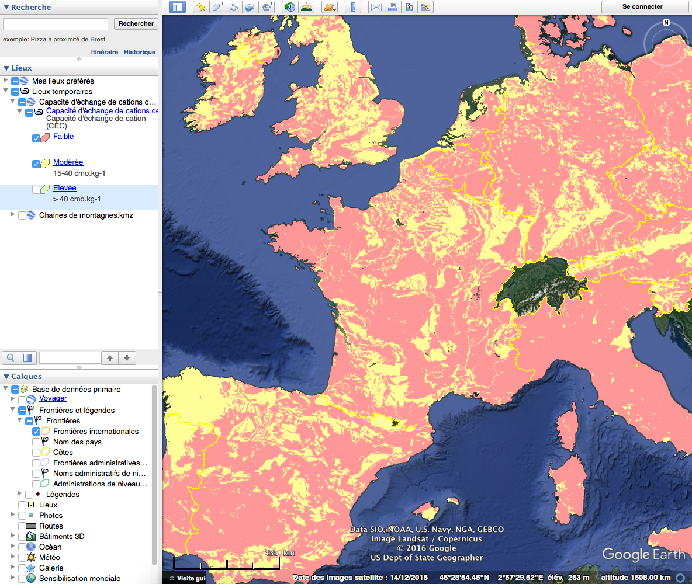
×
A) Les sols sableux du Bassin Parisien ou du Bassin Aquitain donnent des sols à CEC faible.
B) Les régions à substrat granito-métamorphique donnent des sols à CEC faible.
C) Les massifs volcaniques (Chaîne des Puys, Monts Dore, Cantal) donnent des sols à CEC faible.
D) Les fossés d'effondrement donnent des sols à CEC faible.
Commentaire:
Les sols à capacité d'échange cationique (CEC) faible sont souvent trouvés dans des régions avec des substrats granitiques, métamorphiques ou sableux, tandis que les sols volcaniques ou ceux des fossés d'effondrement, riches en minéraux alcalins ou calco-alcalins, ont généralement une CEC plus élevée.
6. Que voit-on sur cette photo de sols ?
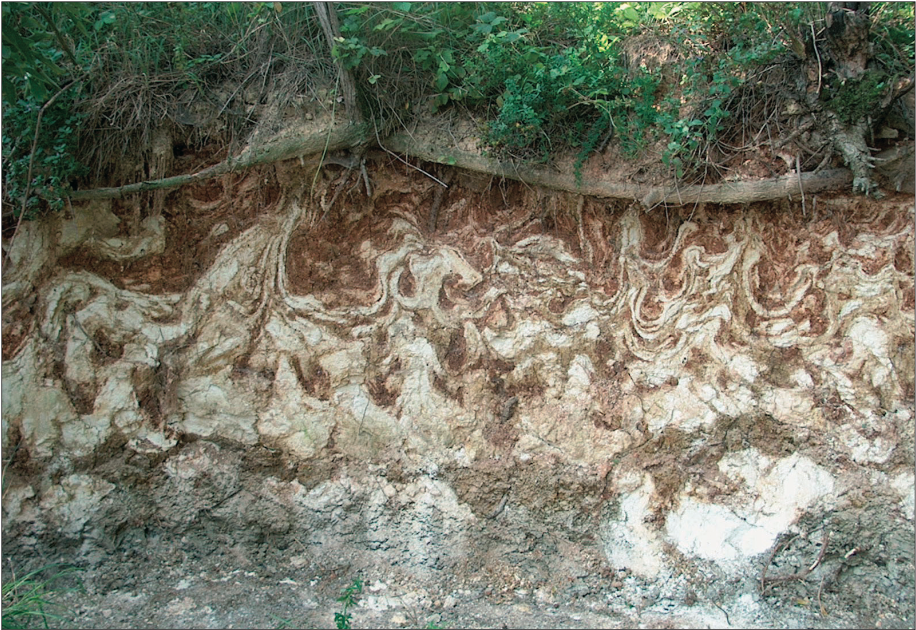
×
A) De la cryoturbation.
B) De la conurbation.
C) De la pédoturbation.
D) De la bioturbation.
Commentaire:
La cryoturbation est un processus de perturbation du sol causé par le gel et le dégel, souvent visible dans les régions froides où les sols présentent des figures importantes de mouvements internes liées aux variations de température.
7. Comment peut-on appeler ces convolutes dans ces sols ?
×
A) Des mixtures.
B) Des flexures.
C) Des plicatures.
D) Des maculatures.
Commentaire:
Les plicatures sont des structures de déformation du sol, souvent observées dans des sols soumis à des contraintes physiques, telles que la compression, entraînant des ondulations ou des plissements du matériau.
8. À quoi peuvent être dues ces déformations ?
×
A) À des mouvements de la nappe phréatique.
B) À de la liquéfaction de niveaux saturés en eau suite à un tremblement de terre.
C) À des déplacements d'organismes fouisseurs.
D) À des alternances de gel et dégel, engendrant des mouvements de matériaux fins dans les niveaux gorgés d'eau.
Commentaire:
Ces déformations sont dues à des processus comme la cryoturbation, où le gel et le dégel provoquent des déplacements de matériaux fins dans les sols saturés en eau, ou à la liquéfaction de sols saturés lors d'un tremblement de terre.
9. Cette photo prise en Croatie montre un champ cultivé dans une dépression circulaire et fertile au beau milieu d'un plateau calcaire. Comment s'appelle cette zone ?
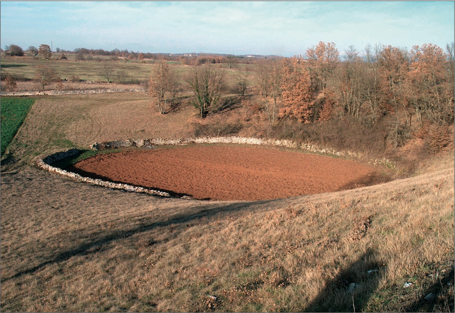
×
A) Un déclinatoire
B) Une doline
C) Une dégouline
D) Une dicline
Commentaire:
Une doline est une dépression circulaire formée par la dissolution et l'érosion localisée du substrat calcaire. dans les régions karstiques. Ces zones forment souvent des sols fertiles, car les argiles résiduelles de décarbonatation s'y concentrent.
10. Quel est ce sol ?
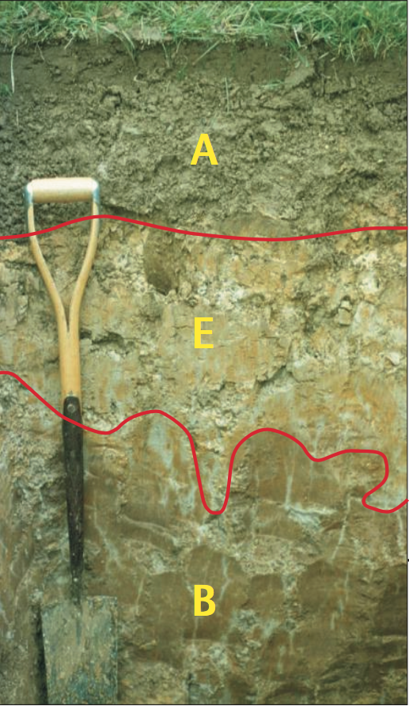
×
A) Un chernozem
B) Un podzol
C) Un sol brun
D) Un sol lessivé
Commentaire:
Un sol lessivé est caractérisé par l'élimination de ses éléments solubles (comme le calcium et le magnésium) par l'eau, ce qui donne un horizon supérieur clair, souvent visible dans ces sols acides sous climat humide.
11. Que signifie la lettre
E
dans le profil pédologique de ce sol ?
×
A) E comme
éluviation
.
B) E comme
émulsion
.
C) E comme
élution
.
D) E comme
extravasation
.
Commentaire:
Dans un profil pédologique, la lettre
E
désigne généralement l'horizon éluvié, où des matières, principalement des minéraux, ont été lessivées par l'eau, indiquant une perte de certaines substances solubles.
12. A quoi est due la couleur blanche de l'horizon
E
?
×
A) Au lessivage des argiles vers l'horizon B.
B) À la présence de cendres volcaniques siliceuses.
C) À la remontée de solutions salées.
D) À la reprécipitation de carbonates.
Commentaire:
La couleur blanche de l'horizon E est souvent due au lessivage des argiles et autres éléments solubles, qui sont entraînés vers l'horizon inférieur B, laissant un horizon clair et lessivé.
13. Quel est ce sol ?
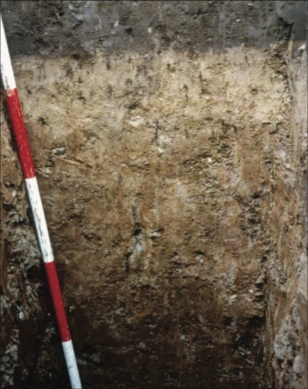
×
A) Un sol ferrallitique.
B) Un sol lessivé.
C) Une rendzine.
D) Un ranker.
Commentaire:
Ce sol est un sol lessivé, où les éléments solubles ont été entraînés par l'eau, laissant un horizon clair ou décoloré, souvent visible dans les climats humides.
14. Quel est ce sol ?
×
A) Un podzol.
B) Un ranker.
C) Un chernozem.
D) Un sol brun
Commentaire:
Un podzol est un sol acide, souvent associé à des zones forestières, caractérisé par un horizon illuvial (horizon B) où des matières organiques et des minéraux alumineux sont accumulés, et un horizon eluvié (horizon E) où les éléments solubles (Al
3+
) ont été lessivés.
15. Ce sol est particulier, car il est difficile à classer. Quels sont les processus pédogénétiques qui sont ou ont été à l'oeuvre dans ce sol ?
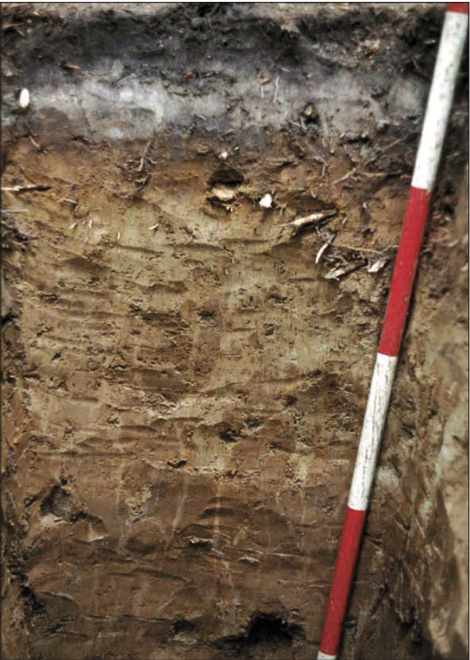
×
A) La ferrallitisation.
B) L'éluviation des argiles.
C) L'illuviation des argiles.
D) La podzolisation.
Commentaire:
La podzolisation est un processus de formation des sols acides, souvent observé sous des climats froids et humides, où l'éluviation des argiles et la lixiviation des éléments solubles entraînent la formation d'horizons distincts dans le profil du sol. L'éluviation des argiles dans l'horizon supérieur, associée à une illuviation dans l'horizon inférieur, se distinguent bien par leurs différences de coloration du brun clair au brun foncé.
16. Quel est ce sol ?
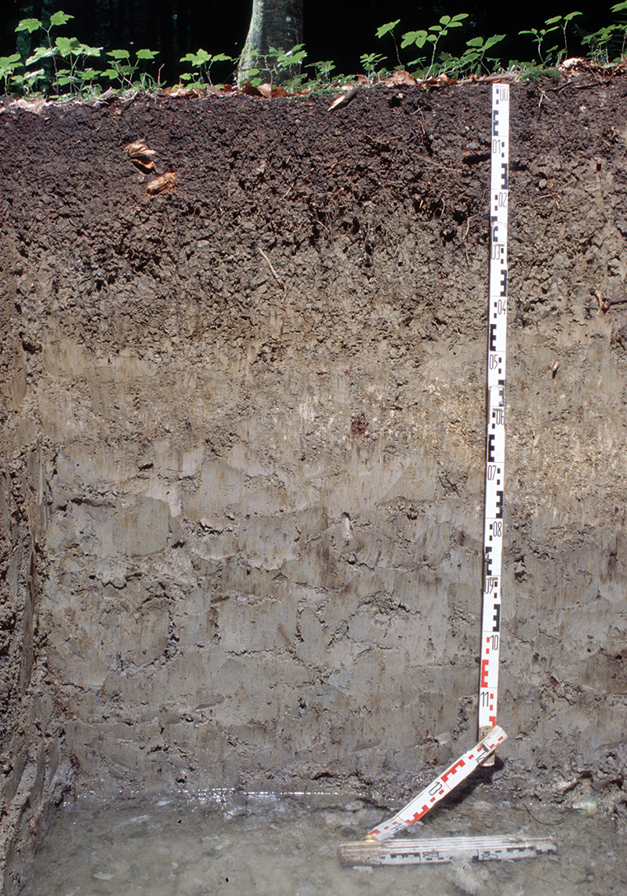
×
A) Un vertisol
B) Un ranker
C) Un gley
D) Un podzol
Commentaire:
Un gley est un sol caractérisé par une forte saturation en eau, généralement observé dans les zones marécageuses, avec des horizons colorés en gris ou bleu, indiquant des conditions réductrices où les oxydes de fer sont lessivés et réduits. Des tâches résiduelles de couleur rouille sont encore visibles.
17. Dans quelles conditions se forment les gleys ?
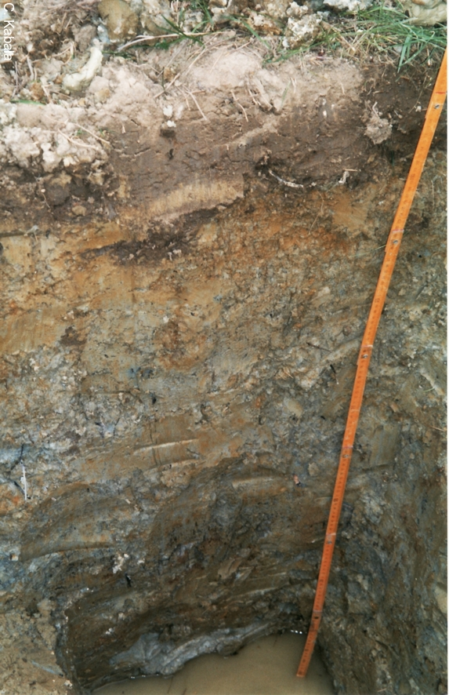
×
A) Uniquement dans les sols d'altitude.
B) Uniquement dans des terrains gorgés d'eau.
C) Uniquement dans les sols sous climat tropical.
D) Uniquement dans les sols soumis à un climat froid.
Commentaire:
Les gleys se forment principalement dans des terrains saturés en eau, souvent dans des zones marécageuses ou humides, où l'absence d'oxygène entraîne des conditions réductrices propices à la formation de sols gris ou bleus.
18. Qu'est-ce qu'on appelle un sol hydromorphe ?
A) Un sol bien drainé, ce qui génère un sol bien oxygéné pour les microbes du sol.
B) Un sol gorgé d'eau, ce qui génère un manque d'oxygène pour les microbes du sol.
C) Un sol marqué par une hydrolyse intense des minéraux de la fraction détritique.
D) Un sol structuré par la percolation de l'eau.
Commentaire:
Un sol hydromorphe se forme dans des conditions d'engorgement en eau, entraînant une saturation qui limite l'oxygénation du sol, ce qui affecte la respiration microbienne et conduit à des caractéristiques spécifiques de ce type de sol.
19. Comment appelle-t-on la zone de couleur grise tachetée de rouille se formant dans un sol occupé temporairement par une nappe d'eau superficielle ?
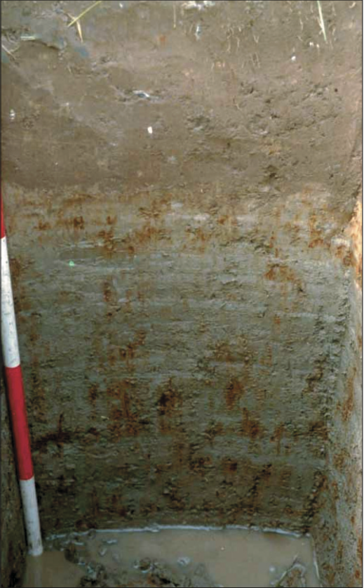
×
A) L'alios.
B) La carapace.
C) Un gley.
D) Un pseudogley.
Commentaire:
Un pseudogley est une zone caractéristique dans les sols où l'eau stagne temporairement, créant une alternance entre des conditions réductrices générant une couleur grise, alternant avec des conditions oxydantes créant des taches rouillées dues à l'oxydation partielle des éléments ferreux.
20. Les sols hydromorphes sont-ils de bons sols pour l'agriculture ?
A) Non
B) Cela dépend
C) Oui
Commentaire:
Les sols hydromorphes, en raison de leur saturation prolongée en eau, manquent d'oxygène et présenter des conditions peu favorables à la croissance des racines et au développement des cultures.
Corriger
Recommencer